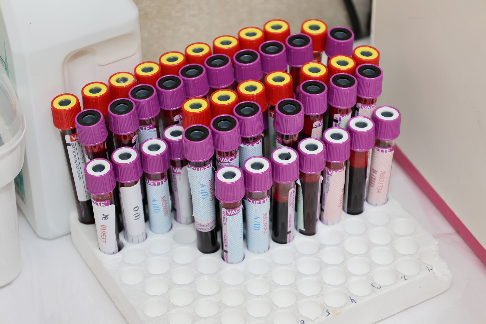
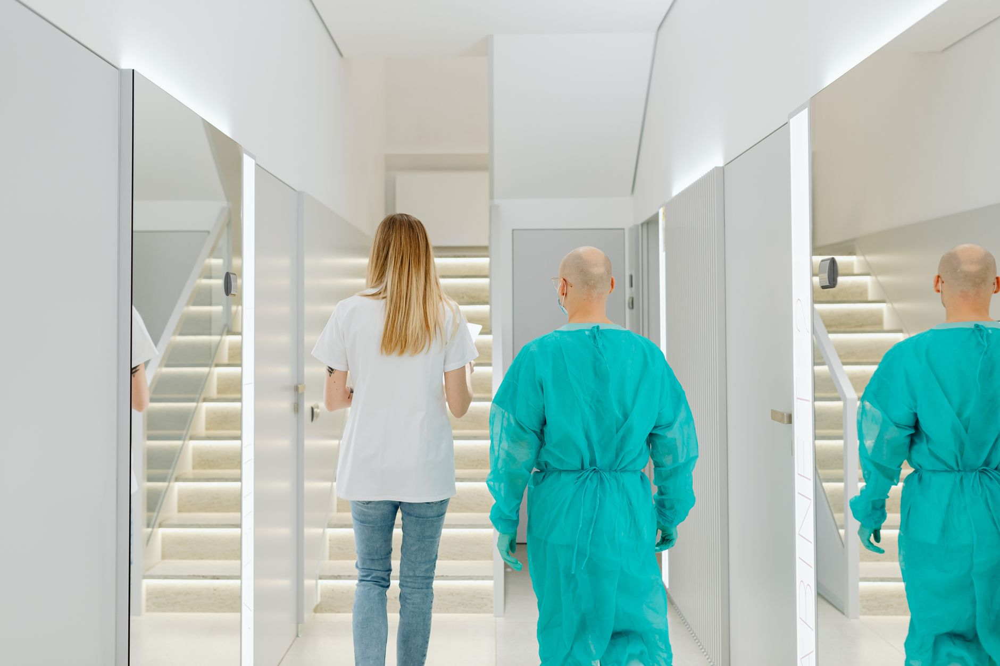
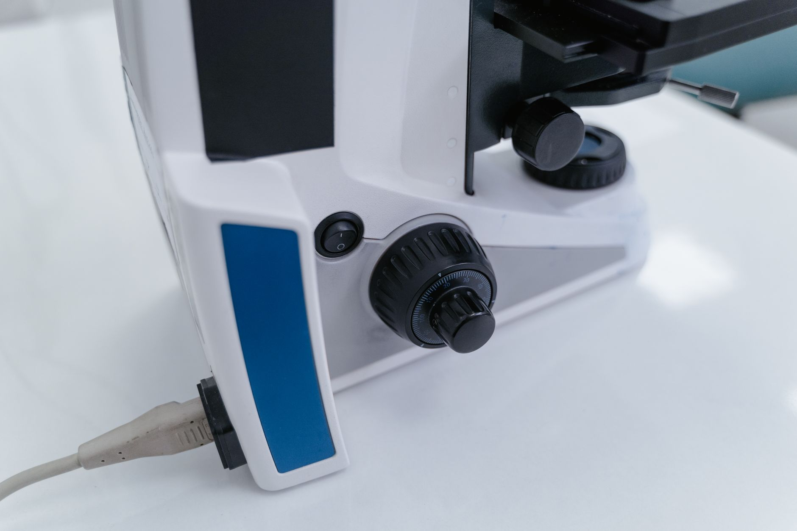

✚ Стрий · медичний центр
Сімейна медицина —
коли дбають про кожного.
Медичний центр Святого Якова у Стрию: сімейні лікарі, діагностика, УЗД і лабораторія під одним дахом. Уважний підхід до дорослих і дітей, без поспіху й черг.
Сімейна медицина · діагностика · лабораторія · Стрий
01 Про центр
Ваш лікар, який знає вашу історію — і веде родину роками.
Медичний центр Святого Якова — це сімейна медицина й діагностика в одному місці у Стрию. Спостереження, аналізи, УЗД і консультації профільних лікарів — спокійно, уважно та без зайвої біганини.
-
Сімейний лікарСпостереження дорослих і дітей, декларація.
-
Діагностика на місціУЗД, аналізи, функціональні дослідження.
-
Без чергЗапис на зручний час, уважний прийом.
02 Напрямки
Медицина для всієї
родини — під дахом


Вартість і підготовка — за телефоном. [ЗАПОВНИТИ: ціни на послуги]

03 Чому Святого Якова
Лікар, який пам'ятає вас —
а не картку з реєстратури.
Сімейна медицина — це про довіру й тривалі стосунки. Ваш лікар знає історію родини, пояснює зрозуміло й супроводжує в потрібних дослідженнях. Спокійно, уважно, по-людськи.
1дах: лікарі, УЗД і лабораторія
0черг — приймаємо за записом
18+і дітям, і дорослим
04 Чому обирають нас
Причини довірити
здоров'я родини
По-сімейному
Ваш лікар знає історію всієї родини.
Діагностика на місці
УЗД, аналізи й обстеження без роз'їздів.
Без черг
Запис на конкретний час, уважний прийом.
Профільні лікарі
Педіатр, гінеколог, сімейний лікар.
Все в одному
Лікар, аналізи й УЗД за один візит.
Зручний запис
Телефоном або в месенджері — швидко.
05 Центр
Місце, де дбають по-людськи

06 Наш підхід
1центр
лікарі, УЗД і лабораторія
лікарі, УЗД і лабораторія
0черг
приймаємо за записом
приймаємо за записом
18+ і дітям, і дорослим
сімейна медицина
сімейна медицина
У Стрию
вул. Дрогобицька, 50 — зручно дістатися. Запис на прийом за телефоном або через форму на сайті.
Зателефонувати07 Запис на прийом
Записатися
на прийом
Залиште контакт — підберемо зручний час до лікаря чи на дослідження. Передзвонимо в робочі години.
- Адресавул. Дрогобицька, 50, Стрий
- Телефон+38 050 694 11 76
- ГрафікЗа записом [ЗАПОВНИТИ]